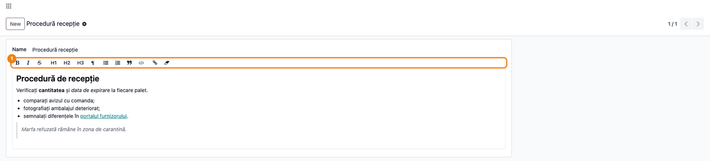
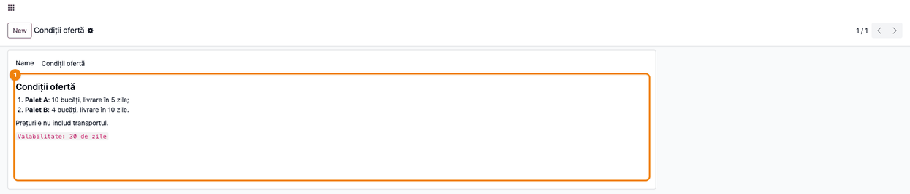
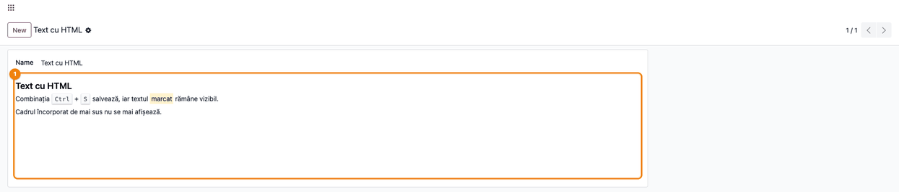

More apps by Terrabit
Other modules from the same publisher, built to work together. All apps →
Rich editing, raw Markdown storage
Markdown Field Widget adds a new OWL field widget — markdown — for any
Text field in the Odoo backend.
It gives users a familiar WYSIWYG editing experience (bold, italic, strikethrough, headings, lists, quotes, code blocks, links), while keeping the stored value as raw Markdown. The text in the database stays portable, easy to version and perfectly readable outside of Odoo.
Conversions happen entirely in the browser, with no server-side dependency at runtime:
Both libraries are bundled locally as UMD builds, so the module works offline and needs no external CDN.
✨ Key features
readonly: in read-only mode it renders the Markdown as HTML, without the
toolbar.min_height option.⚙️ Usage
<field name="notes" widget="markdown"/>
<field name="notes" widget="markdown" options="{'min_height': 300}"/>
Declare the field as Text on your model:
notes = fields.Text(string="Notes")
Then use the markdown widget in the form view:
<field name="notes" widget="markdown"/>
Supported options:
min_height — minimum height of the editing area, in pixels (default 160):<field name="notes" widget="markdown" options="{'min_height': 300}"/>
The widget honors readonly: in read-only mode it renders the Markdown as HTML,
without the toolbar.
Editing. In edit mode the toolbar sits above the field; select text and press a button to format it. The value is saved as Markdown when you leave the field and save the record.

Read-only. The text is shown formatted, without the toolbar.

Safe display. Since 19.0.1.0.5 the HTML produced from the Markdown is sanitized
before it is displayed, in edit and read-only mode, including for values stored
earlier. Harmless inline HTML such as <kbd> or <mark> keeps its formatting;
scripts, inline event handlers, javascript: links and embedded content (<iframe>,
<object>, <embed>) are not displayed. Replace embedded videos or maps with a
regular link.
Strikethrough, inline HTML such as <kbd> or <mark> and tables are not kept when
the text is edited and saved: only standard Markdown is stored.

~~text~~, GFM tables (with column alignment) and [x] / [ ] items; a table Markdown cannot express (merged cells, lists or paragraphs in a cell) is kept as HTML instead of being flattened. Values already flattened by an earlier save cannot be recovered.javascript: links and embedded content (<iframe>, <object>, <embed>) are removed; Markdown formatting and harmless inline HTML stay as they were.deltatech_markdown_field does not change.Invalid regular expression: /^*-+:*$/), stopping the backend in non-debug mode and the JS unit tests. The expression is now wrapped in parentheses, so it survives minification.Our 600+ apps on the Odoo Apps Store are used in Odoo implementations across Europe, the Americas, Asia and Africa — by companies we have never even met. That is the advantage of building modules that simply work.
Questions about this module, or need it adapted to your processes? Write to us — the developers who build it will answer.
Terrabit support →Other modules from the same publisher, built to work together. All apps →